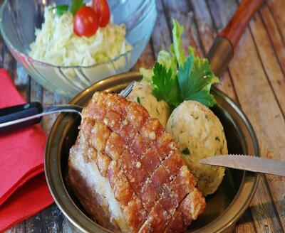
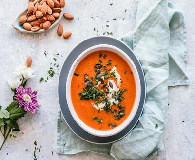

Home
About
Tags
Recipes
Contact
Simply Recipes
No Fluff, Just Recipes
Recipes
Beef(1)
Breakfast(2)
Carrots(3)
Food(4)

Carne Asada
Prep : 15min | Cook : 5min
Geek Ribs
Prep : 15min | Cook : 5min

Vegetable Soup
Prep : 15min | Cook : 5min
Banana PanCake
Prep : 15min | Cook : 5min